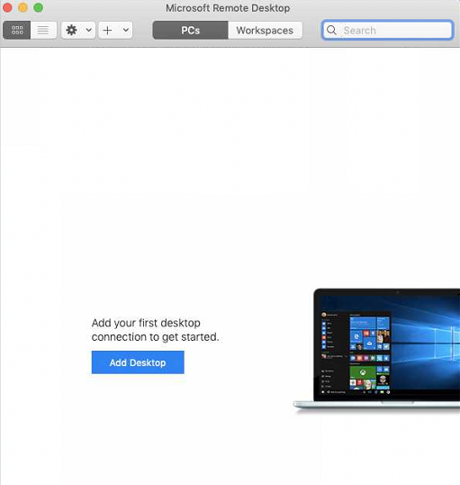
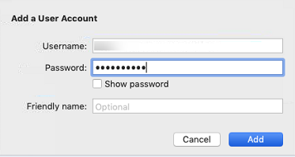
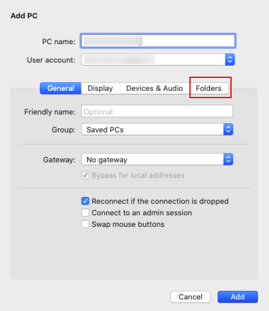

Scenarios
This section describes how to use Microsoft Remote Desktop for Mac to transfer files from a local Mac to a Windows ECS.
Prerequisites
- The remote access tool supported by Mac has been installed on the local Mac. This section uses Microsoft Remote Desktop for Mac as an example. Download Microsoft Remote Desktop for Mac.
- The target ECS has had an EIP bound.
- When you log in to the ECS for the first time, ensure that RDP has been enabled on it. To do so, use VNC to log in to the ECS, enable RDP, and access the ECS using MSTSC.

By default, RDP has been enabled on the ECSs created using a public image.
Procedure
- Start Microsoft Remote Desktop.
- Click Add Desktop.Figure 1 Add Desktop
 - Set login parameters.
- PC name: Enter the EIP bound to the target Windows ECS.
- User account: Select Add User Account from the drop-down list.The Add a User Account dialog box is displayed.
- Enter username administrator and password for logging in to the Windows ECS and click Add.Figure 2 Add user account
Figure 3 Add PC

- Enter username administrator and password for logging in to the Windows ECS and click Add.
Select the folder to be uploaded.
- Click Folders and switch to the folder list.
- Click in the lower left corner, select the folder to be uploaded, and click Add.
- On the Remote Desktop page, double-click the icon of the target Windows ECS.Figure 4 Double-click for login

- Confirm the information and click Continue.
You have connected to the Windows ECS.
View the shared folder on the ECS.
Copy the files to be uploaded to the ECS. Alternatively, download the files from the ECS to your local Mac.